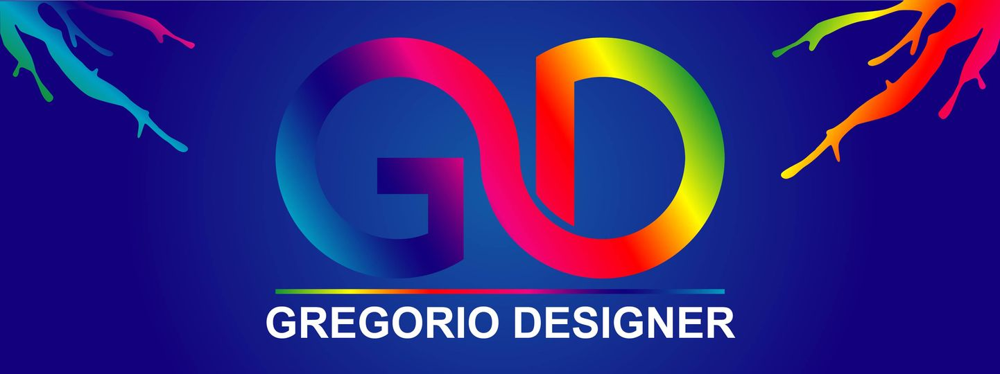

Seguramente te estarás preguntando, ¿quien soy?
Bueno en principio, mi nombre es Gregorio Rondón, nací en junio del 2003. Vivo en el estado Trujillo de Venezuela, estudio actualmente informática, pero casi siempre he estado creando y editando fotos, pero no solo esto; hice vídeos, unas que otras músicas mezcladas que encontraba en Internet era un tipo de "DJ".
En mis inicios yo no conocía GIMP, Krita, Darktable, Inkscape,... Yo comencé usando paint de Windows, pero al yo ir conociendo mas y mas, ya no era suficiente para mi, de allí conocí el famoso Photoshop CS6, que era unos de los mejores, pero casi no me gusto, tenia herramientas que ni siquiera use, a demás es de pago, cosa que no tengo suficiente dinero para pagar este, y mis primeros trabajos eran de experimentos, así estuve por unos días hasta que se termino la prueba gratis, deje a un lado los diseños y la edición fotográfica por un tiempo.
Allí con Micrsoft Office, aprendí hacer diapositivas y descubrí que podía crear vídeo con imágenes y música pero como siempre llegue a un punto que ya me limitaba. Conocí el famoso Sony Vegas Pro, solo duro hasta que finalizo su periodo de prueba, así estuve saltando entre Software, ya conocía casi todos los editores de vídeo, pero al ir aprendiendo mas, queriendo mas herramientas profesionales, mi computadora se limitaba, un día ya necesitaba velocidad, windows era ya muy pesado para mi computadora, en busca de nuevos sistemas operativos, encontré a Linux, no lo conocía la primera distribución que instale en mi computadora fue ubuntu XFCE o mayormente conocido como Xubuntu, pero antes de eso, me di cuenta que Photoshop, VSDC vídeo editor, no se abrían en Linux, así que me puse a buscar y encontré a GIMP y Krita la alternativa a Photoshop, Inkscape la alternativa a Illustrator, Kdenlive la alternativa a VSDC y otros, Darktable la alternativa a Lightroom, y así cada uno.
Allí uno de mis experimentos que me quedo a la primera en Inkscape, fue mi logo de Gregorio Designer o también abreviado GD. 
Desde ese día solo uso programas similares, pero te preguntaras, ¿como un diseñador y editor solo usa programas gratuitos?, pues déjame decirte que nunca todos los escritores van a usar un lápiz de marca cara. El pintor o escritor usa el pincel o lápiz siempre usa el que mas se adapte el, hay veces que las obras de arte mas famosas so hicieron con cosas que no eran de marca, como dijo Ruben en su canal de RunbenGuo°, "la cámara da igual", pero a mi me toca decirte que "el programa da igual" el artista es el que plasma su creación no los programas.
Al ir haciendo mis diseños y fotos, la subía a mi Facebook, de allí abrí mi cuenta de Instagram, no e podido seguir subiendo fotos muy seguido ya que e estado ocupado con unos trabajos, pero al ir haciendo este tipo de ediciones fotográficas, pensé en abrir mi canal de Youtube, que no hay muchos vídeos, ya que no tengo un equipo para editar al mismo tiempo que grabo, pero paso a paso, poco a poco, voy subiendo vídeos.
Aunque no se como hago para fascinarme de tantas cosas que no me quede con solo diseñador y productor audio visual, de allí tenia la curiosidad de como hacían los programas como GIMP. Comencé a buscar por Internet, allí aprendí los distintos lenguajes de programación, entre dos de ellos que mas rápido aprendí fue HTML y CSS, los mas básicos, pero tuve la idea de crear una pagina web con solo los conocimientos básicos que tenia yo. Pero al empezar me di cuenta que usando Visual Studio Code o Atom, son muy pesados para mi computadora, donde conocí uno de los mas básicos pero potentes editores de código y texto Sublime Text, ya podía tener el navegador web, la carpetas de búsquedas, y otros programas abiertos, a pesar que apenas tengo 1GB de ram y un procesador de 2 núcleos de 1.6 hz de modelo viejo, me va fluido la mayoría de las veces.